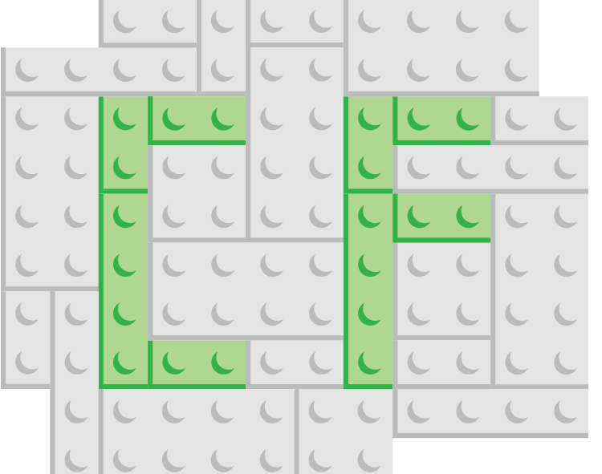

Designed for every device
Capital Framework has been written to work with a wide range of devices and browsers. Following a modern, mobile first responsive approach, sites easily adapt to wide range of screen sizes all while carefully following accessibility best practices. Capital Framework supports and actively tests for support in IE7+, Chrome, Safari, Firefox, Opera, iOS6+, Android 4+, and the Blackberry Bold to ensure that our sites can meet the needs of as many users as possible.
A solid project starter
Setting up the framework for your project and creating new components should be quick and easy. By using our Yeoman generator, you not only get access to a collection of Less, CSS, and JavaScript files, but also a modern front end build process. The generator scaffolds out a project directory, package.json file, and a starter Grunt file, allowing you to quickly spin up a new project. Each of these files can easily be adapted to meet the needs of a developer, while providing examples of best practices.

Component based architecture
Each Capital Framework component is its own repository. Components can be used by themselves, but they can easily be compiled to work together. We rely on npm and Bower to manage the downloading and updating of components and their dependencies within a project. This setup provides a lot of flexibility and makes it easier for projects using the framework to take advantage of updates and bug fixes at their own convenience.